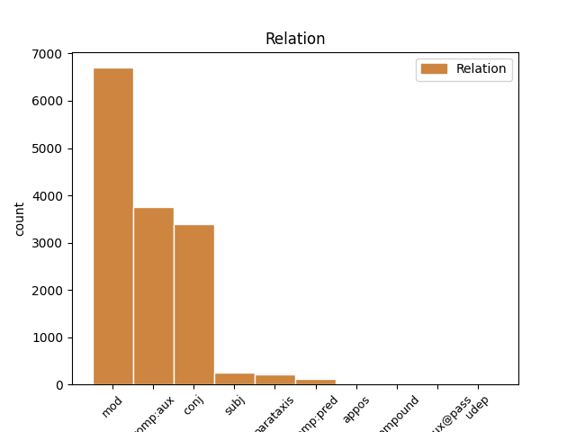
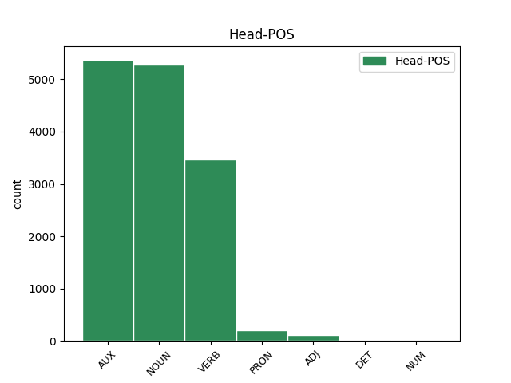
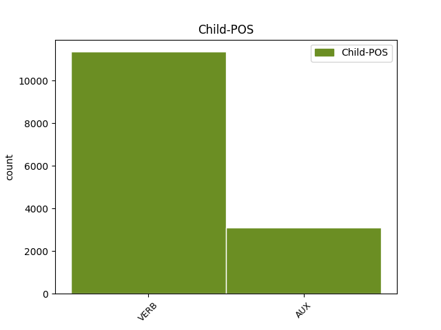

Distribution of features within this leaf



Agreement Rules sorted by frequency.
- When the dependent token is the modifer(mod) of the head token, and the dependent token is VERB.
1 Todo _ _ _ _ 0 _ _ _
2 recuerda recordar VERB VERB Mood=Ind|Number=Sing|Person=3|Tense=Pres|VerbForm=Fin 0 _ _ _
3 aquel _ _ _ _ 0 _ _ _
4 histórico _ _ _ _ 0 _ _ _
5 intercambio _ _ _ _ 0 _ _ _
6 de _ _ _ _ 0 _ _ _
7 corbatas _ _ _ _ 0 _ _ _
8 con _ _ _ _ 0 _ _ _
9 el _ _ _ _ 0 _ _ _
10 dinosaurio _ _ _ _ 0 _ _ _
11 cubano _ _ _ _ 0 _ _ _
12 con _ _ _ _ 0 _ _ _
13 resultados _ _ _ _ 0 _ _ _
14 tan _ _ _ _ 0 _ _ _
15 brillantes _ _ _ _ 0 _ _ _
16 y _ _ _ _ 0 _ _ _
17 espectaculares _ _ _ _ 0 _ _ _
18 : _ _ _ _ 0 _ _ _
19 yo _ _ _ _ 0 _ _ _
20 muevo mover VERB VERB Mood=Ind|Number=Sing|Person=1|Tense=Pres|VerbForm=Fin 2 mod _ _
21 ficha _ _ _ _ 0 _ _ _
22 si _ _ _ _ 0 _ _ _
23 tú _ _ _ _ 0 _ _ _
24 mueves _ _ _ _ 0 _ _ _
25 ficha _ _ _ _ 0 _ _ _
26 . _ _ _ _ 0 _ _ _
1 Van _ _ _ _ 0 _ _ _
2 a _ _ _ _ 0 _ _ _
3 por _ _ _ _ 0 _ _ _
4 todas _ _ _ _ 0 _ _ _
5 : _ _ _ _ 0 _ _ _
6 un _ _ _ _ 0 _ _ _
7 día _ _ _ _ 0 _ _ _
8 el _ _ _ _ 0 _ _ _
9 ministro _ _ _ _ 0 _ _ _
10 del _ _ _ _ 0 _ _ _
11 ramo _ _ _ _ 0 _ _ _
12 , _ _ _ _ 0 _ _ _
13 Josep _ _ _ _ 0 _ _ _
14 Piqué _ _ _ _ 0 _ _ _
15 , _ _ _ _ 0 _ _ _
16 saluda _ _ _ _ 0 _ _ _
17 los _ _ _ _ 0 _ _ _
18 esfuerzos _ _ _ _ 0 _ _ _
19 del _ _ _ _ 0 _ _ _
20 Gobierno _ _ _ _ 0 _ _ _
21 argelino _ _ _ _ 0 _ _ _
22 en _ _ _ _ 0 _ _ _
23 el _ _ _ _ 0 _ _ _
24 respeto _ _ _ _ 0 _ _ _
25 a _ _ _ _ 0 _ _ _
26 los _ _ _ _ 0 _ _ _
27 derechos _ _ _ _ 0 _ _ _
28 humanos _ _ _ _ 0 _ _ _
29 y _ _ _ _ 0 _ _ _
30 la _ _ _ _ 0 _ _ _
31 democracia _ _ _ _ 0 _ _ _
32 : _ _ _ _ 0 _ _ _
33 lo _ _ _ _ 0 _ _ _
34 hace _ _ _ _ 0 _ _ _
35 oportunamente _ _ _ _ 0 _ _ _
36 , _ _ _ _ 0 _ _ _
37 cuando _ _ _ _ 0 _ _ _
38 tres _ _ _ _ 0 _ _ _
39 días _ _ _ _ 0 _ _ _
40 antes _ _ _ _ 0 _ _ _
41 el _ _ _ _ 0 _ _ _
42 Ejército _ _ _ _ 0 _ _ _
43 argelino _ _ _ _ 0 _ _ _
44 ha haber AUX AUX Mood=Ind|Number=Sing|Person=3|Tense=Pres|VerbForm=Fin 0 _ _ _
45 disparado disparar VERB VERB Gender=Masc|Number=Sing|Tense=Past|VerbForm=Part 44 comp:aux _ _
46 contra _ _ _ _ 0 _ _ _
47 una _ _ _ _ 0 _ _ _
48 manifestación _ _ _ _ 0 _ _ _
49 en _ _ _ _ 0 _ _ _
50 Tizi _ _ _ _ 0 _ _ _
51 Uzú _ _ _ _ 0 _ _ _
52 y _ _ _ _ 0 _ _ _
53 deja _ _ _ _ 0 _ _ _
54 un _ _ _ _ 0 _ _ _
55 balance _ _ _ _ 0 _ _ _
56 de _ _ _ _ 0 _ _ _
57 un _ _ _ _ 0 _ _ _
58 centenar _ _ _ _ 0 _ _ _
59 de _ _ _ _ 0 _ _ _
60 víctimas _ _ _ _ 0 _ _ _
61 mortales _ _ _ _ 0 _ _ _
62 . _ _ _ _ 0 _ _ _
1 Conviene _ _ _ _ 0 _ _ _
2 que _ _ _ _ 0 _ _ _
3 ahora _ _ _ _ 0 _ _ _
4 , _ _ _ _ 0 _ _ _
5 en _ _ _ _ 0 _ _ _
6 plena _ _ _ _ 0 _ _ _
7 apoteosis _ _ _ _ 0 _ _ _
8 de _ _ _ _ 0 _ _ _
9 pre-presidencia _ _ _ _ 0 _ _ _
10 ( _ _ _ _ 0 _ _ _
11 presidiremos _ _ _ _ 0 _ _ _
12 la _ _ _ _ 0 _ _ _
13 Unión _ _ _ _ 0 _ _ _
14 Europea _ _ _ _ 0 _ _ _
15 dentro _ _ _ _ 0 _ _ _
16 de _ _ _ _ 0 _ _ _
17 unos _ _ _ _ 0 _ _ _
18 meses _ _ _ _ 0 _ _ _
19 : _ _ _ _ 0 _ _ _
20 rogativas _ _ _ _ 0 _ _ _
21 y _ _ _ _ 0 _ _ _
22 festejos _ _ _ _ 0 _ _ _
23 son _ _ _ _ 0 _ _ _
24 de _ _ _ _ 0 _ _ _
25 rigor _ _ _ _ 0 _ _ _
26 ) _ _ _ _ 0 _ _ _
27 reflexionemos reflexionar VERB VERB Mood=Imp|Number=Plur|Person=1|VerbForm=Fin 0 _ _ _
28 críticamente _ _ _ _ 0 _ _ _
29 y _ _ _ _ 0 _ _ _
30 nos _ _ _ _ 0 _ _ _
31 hagamos hacer VERB VERB Mood=Sub|Number=Plur|Person=1|Tense=Pres|VerbForm=Fin 27 conj _ _
32 un _ _ _ _ 0 _ _ _
33 lifting _ _ _ _ 0 _ _ _
34 metodológico _ _ _ _ 0 _ _ _
35 . _ _ _ _ 0 _ _ _
1 Conviene _ _ _ _ 0 _ _ _
2 que _ _ _ _ 0 _ _ _
3 ahora _ _ _ _ 0 _ _ _
4 , _ _ _ _ 0 _ _ _
5 en _ _ _ _ 0 _ _ _
6 plena _ _ _ _ 0 _ _ _
7 apoteosis _ _ _ _ 0 _ _ _
8 de _ _ _ _ 0 _ _ _
9 pre-presidencia _ _ _ _ 0 _ _ _
10 ( _ _ _ _ 0 _ _ _
11 presidiremos presidir VERB VERB Mood=Ind|Number=Plur|Person=1|Tense=Fut|VerbForm=Fin 0 _ _ _
12 la _ _ _ _ 0 _ _ _
13 Unión _ _ _ _ 0 _ _ _
14 Europea _ _ _ _ 0 _ _ _
15 dentro _ _ _ _ 0 _ _ _
16 de _ _ _ _ 0 _ _ _
17 unos _ _ _ _ 0 _ _ _
18 meses _ _ _ _ 0 _ _ _
19 : _ _ _ _ 0 _ _ _
20 rogativas _ _ _ _ 0 _ _ _
21 y _ _ _ _ 0 _ _ _
22 festejos _ _ _ _ 0 _ _ _
23 son ser AUX AUX Mood=Ind|Number=Plur|Person=3|Tense=Pres|VerbForm=Fin 11 mod _ _
24 de _ _ _ _ 0 _ _ _
25 rigor _ _ _ _ 0 _ _ _
26 ) _ _ _ _ 0 _ _ _
27 reflexionemos _ _ _ _ 0 _ _ _
28 críticamente _ _ _ _ 0 _ _ _
29 y _ _ _ _ 0 _ _ _
30 nos _ _ _ _ 0 _ _ _
31 hagamos _ _ _ _ 0 _ _ _
32 un _ _ _ _ 0 _ _ _
33 lifting _ _ _ _ 0 _ _ _
34 metodológico _ _ _ _ 0 _ _ _
35 . _ _ _ _ 0 _ _ _
1 Mientras _ _ _ _ 0 _ _ _
2 se _ _ _ _ 0 _ _ _
3 consigue _ _ _ _ 0 _ _ _
4 alguna _ _ _ _ 0 _ _ _
5 solución _ _ _ _ 0 _ _ _
6 , _ _ _ _ 0 _ _ _
7 las _ _ _ _ 0 _ _ _
8 ventas _ _ _ _ 0 _ _ _
9 caen _ _ _ _ 0 _ _ _
10 en _ _ _ _ 0 _ _ _
11 picado _ _ _ _ 0 _ _ _
12 - _ _ _ _ 0 _ _ _
13 - _ _ _ _ 0 _ _ _
14 en _ _ _ _ 0 _ _ _
15 España _ _ _ _ 0 _ _ _
16 el _ _ _ _ 0 _ _ _
17 ciclomotor _ _ _ _ 0 _ _ _
18 es ser AUX AUX Mood=Ind|Number=Sing|Person=3|Tense=Pres|VerbForm=Fin 0 _ _ _
19 el _ _ _ _ 0 _ _ _
20 auténtico _ _ _ _ 0 _ _ _
21 motor _ _ _ _ 0 _ _ _
22 del _ _ _ _ 0 _ _ _
23 sector _ _ _ _ 0 _ _ _
24 de _ _ _ _ 0 _ _ _
25 las _ _ _ _ 0 _ _ _
26 dos _ _ _ _ 0 _ _ _
27 ruedas _ _ _ _ 0 _ _ _
28 y _ _ _ _ 0 _ _ _
29 hay haber AUX AUX Mood=Ind|Number=Sing|Person=3|Tense=Pres|VerbForm=Fin 18 conj _ _
30 seis _ _ _ _ 0 _ _ _
31 marcas _ _ _ _ 0 _ _ _
32 que _ _ _ _ 0 _ _ _
33 fabrican _ _ _ _ 0 _ _ _
34 motos _ _ _ _ 0 _ _ _
35 de _ _ _ _ 0 _ _ _
36 50 _ _ _ _ 0 _ _ _
37 cc _ _ _ _ 0 _ _ _
38 - _ _ _ _ 0 _ _ _
39 - _ _ _ _ 0 _ _ _
40 y _ _ _ _ 0 _ _ _
41 demasiados _ _ _ _ 0 _ _ _
42 temerarios _ _ _ _ 0 _ _ _
43 circulan _ _ _ _ 0 _ _ _
44 sin _ _ _ _ 0 _ _ _
45 seguro _ _ _ _ 0 _ _ _
46 . _ _ _ _ 0 _ _ _
1 En _ _ _ _ 0 _ _ _
2 los _ _ _ _ 0 _ _ _
3 últimos _ _ _ _ 0 _ _ _
4 años _ _ _ _ 0 _ _ _
5 se _ _ _ _ 0 _ _ _
6 ha haber AUX AUX Mood=Ind|Number=Sing|Person=3|Tense=Pres|VerbForm=Fin 0 _ _ _
7 ido ir AUX AUX Gender=Masc|Number=Sing|Tense=Past|VerbForm=Part 6 comp:aux _ _
8 creando _ _ _ _ 0 _ _ _
9 un _ _ _ _ 0 _ _ _
10 tipo _ _ _ _ 0 _ _ _
11 de _ _ _ _ 0 _ _ _
12 comportamiento _ _ _ _ 0 _ _ _
13 en _ _ _ _ 0 _ _ _
14 política _ _ _ _ 0 _ _ _
15 exterior _ _ _ _ 0 _ _ _
16 que _ _ _ _ 0 _ _ _
17 oscila _ _ _ _ 0 _ _ _
18 entre _ _ _ _ 0 _ _ _
19 la _ _ _ _ 0 _ _ _
20 prepotencia _ _ _ _ 0 _ _ _
21 y _ _ _ _ 0 _ _ _
22 la _ _ _ _ 0 _ _ _
23 impotencia _ _ _ _ 0 _ _ _
24 . _ _ _ _ 0 _ _ _
1 Lo _ _ _ _ 0 _ _ _
2 que _ _ _ _ 0 _ _ _
3 FALLARON fallar VERB VERB Mood=Ind|Number=Plur|Person=3|Tense=Past|VerbForm=Fin 4 subj _ _
4 fueron ser AUX AUX Mood=Ind|Number=Plur|Person=3|Tense=Past|VerbForm=Fin 0 _ _ _
5 las _ _ _ _ 0 _ _ _
6 formas _ _ _ _ 0 _ _ _
7 . _ _ _ _ 0 _ _ _
1 Conviene _ _ _ _ 0 _ _ _
2 que _ _ _ _ 0 _ _ _
3 ahora _ _ _ _ 0 _ _ _
4 , _ _ _ _ 0 _ _ _
5 en _ _ _ _ 0 _ _ _
6 plena _ _ _ _ 0 _ _ _
7 apoteosis _ _ _ _ 0 _ _ _
8 de _ _ _ _ 0 _ _ _
9 pre-presidencia _ _ _ _ 0 _ _ _
10 ( _ _ _ _ 0 _ _ _
11 presidiremos presidir VERB VERB Mood=Ind|Number=Plur|Person=1|Tense=Fut|VerbForm=Fin 27 parataxis _ _
12 la _ _ _ _ 0 _ _ _
13 Unión _ _ _ _ 0 _ _ _
14 Europea _ _ _ _ 0 _ _ _
15 dentro _ _ _ _ 0 _ _ _
16 de _ _ _ _ 0 _ _ _
17 unos _ _ _ _ 0 _ _ _
18 meses _ _ _ _ 0 _ _ _
19 : _ _ _ _ 0 _ _ _
20 rogativas _ _ _ _ 0 _ _ _
21 y _ _ _ _ 0 _ _ _
22 festejos _ _ _ _ 0 _ _ _
23 son _ _ _ _ 0 _ _ _
24 de _ _ _ _ 0 _ _ _
25 rigor _ _ _ _ 0 _ _ _
26 ) _ _ _ _ 0 _ _ _
27 reflexionemos reflexionar VERB VERB Mood=Imp|Number=Plur|Person=1|VerbForm=Fin 0 _ _ _
28 críticamente _ _ _ _ 0 _ _ _
29 y _ _ _ _ 0 _ _ _
30 nos _ _ _ _ 0 _ _ _
31 hagamos _ _ _ _ 0 _ _ _
32 un _ _ _ _ 0 _ _ _
33 lifting _ _ _ _ 0 _ _ _
34 metodológico _ _ _ _ 0 _ _ _
35 . _ _ _ _ 0 _ _ _
1 Cuando _ _ _ _ 0 _ _ _
2 el _ _ _ _ 0 _ _ _
3 toro _ _ _ _ 0 _ _ _
4 no _ _ _ _ 0 _ _ _
5 tiene _ _ _ _ 0 _ _ _
6 casta _ _ _ _ 0 _ _ _
7 , _ _ _ _ 0 _ _ _
8 blandea _ _ _ _ 0 _ _ _
9 y _ _ _ _ 0 _ _ _
10 no _ _ _ _ 0 _ _ _
11 ofrece _ _ _ _ 0 _ _ _
12 sensación _ _ _ _ 0 _ _ _
13 de _ _ _ _ 0 _ _ _
14 riesgo _ _ _ _ 0 _ _ _
15 , _ _ _ _ 0 _ _ _
16 lo _ _ _ _ 0 _ _ _
17 mejor _ _ _ _ 0 _ _ _
18 que _ _ _ _ 0 _ _ _
19 puede poder AUX AUX Mood=Ind|Number=Sing|Person=3|Tense=Pres|VerbForm=Fin 23 subj _ _
20 hacer _ _ _ _ 0 _ _ _
21 el _ _ _ _ 0 _ _ _
22 público _ _ _ _ 0 _ _ _
23 es ser AUX AUX Mood=Ind|Number=Sing|Person=3|Tense=Pres|VerbForm=Fin 0 _ _ _
24 ir _ _ _ _ 0 _ _ _
25 se _ _ _ _ 0 _ _ _
26 a _ _ _ _ 0 _ _ _
27 tocar _ _ _ _ 0 _ _ _
28 el _ _ _ _ 0 _ _ _
29 tambor _ _ _ _ 0 _ _ _
30 a _ _ _ _ 0 _ _ _
31 Calanda _ _ _ _ 0 _ _ _
32 y _ _ _ _ 0 _ _ _
33 , _ _ _ _ 0 _ _ _
34 por _ _ _ _ 0 _ _ _
35 lo _ _ _ _ 0 _ _ _
36 menos _ _ _ _ 0 _ _ _
37 , _ _ _ _ 0 _ _ _
38 se _ _ _ _ 0 _ _ _
39 quita _ _ _ _ 0 _ _ _
40 de _ _ _ _ 0 _ _ _
41 encima _ _ _ _ 0 _ _ _
42 el _ _ _ _ 0 _ _ _
43 frío _ _ _ _ 0 _ _ _
44 . _ _ _ _ 0 _ _ _
1 El _ _ _ _ 0 _ _ _
2 problema _ _ _ _ 0 _ _ _
3 para _ _ _ _ 0 _ _ _
4 Costa _ _ _ _ 0 _ _ _
5 es ser AUX AUX Mood=Ind|Number=Sing|Person=3|Tense=Pres|VerbForm=Fin 0 _ _ _
6 que _ _ _ _ 0 _ _ _
7 ya _ _ _ _ 0 _ _ _
8 ha _ _ _ _ 0 _ _ _
9 tenido tener VERB VERB Gender=Masc|Number=Sing|Tense=Past|VerbForm=Part 5 comp:pred _ _
10 que _ _ _ _ 0 _ _ _
11 pegar _ _ _ _ 0 _ _ _
12 estos _ _ _ _ 0 _ _ _
13 gritos _ _ _ _ 0 _ _ _
14 demasiado _ _ _ _ 0 _ _ _
15 a _ _ _ _ 0 _ _ _
16 menudo _ _ _ _ 0 _ _ _
17 en _ _ _ _ 0 _ _ _
18 Flushing _ _ _ _ 0 _ _ _
19 Meadow _ _ _ _ 0 _ _ _
20 . _ _ _ _ 0 _ _ _
1 " _ _ _ _ 0 _ _ _
2 No _ _ _ _ 0 _ _ _
3 se _ _ _ _ 0 _ _ _
4 podía poder AUX AUX Mood=Ind|Number=Sing|Person=3|Tense=Imp|VerbForm=Fin 10 comp:pred _ _
5 volar _ _ _ _ 0 _ _ _
6 sin _ _ _ _ 0 _ _ _
7 ella _ _ _ _ 0 _ _ _
8 " _ _ _ _ 0 _ _ _
9 , _ _ _ _ 0 _ _ _
10 defendió defender VERB VERB Mood=Ind|Number=Sing|Person=3|Tense=Past|VerbForm=Fin 0 _ _ _
11 Hidalgo _ _ _ _ 0 _ _ _
12 . _ _ _ _ 0 _ _ _
1 Y _ _ _ _ 0 _ _ _
2 mientras _ _ _ _ 0 _ _ _
3 el _ _ _ _ 0 _ _ _
4 Gobierno _ _ _ _ 0 _ _ _
5 de _ _ _ _ 0 _ _ _
6 Madrid _ _ _ _ 0 _ _ _
7 llamaba llamar VERB VERB Mood=Ind|Number=Sing|Person=3|Tense=Imp|VerbForm=Fin 0 _ _ _
8 inútilmente _ _ _ _ 0 _ _ _
9 en _ _ _ _ 0 _ _ _
10 puertas _ _ _ _ 0 _ _ _
11 supuestamente _ _ _ _ 0 _ _ _
12 amigas _ _ _ _ 0 _ _ _
13 ( _ _ _ _ 0 _ _ _
14 Francia _ _ _ _ 0 _ _ _
15 fue ser AUX AUX Mood=Ind|Number=Sing|Person=3|Tense=Past|VerbForm=Fin 7 parataxis _ _
16 un _ _ _ _ 0 _ _ _
17 caso _ _ _ _ 0 _ _ _
18 paradigmático _ _ _ _ 0 _ _ _
19 ) _ _ _ _ 0 _ _ _
20 , _ _ _ _ 0 _ _ _
21 las _ _ _ _ 0 _ _ _
22 otras _ _ _ _ 0 _ _ _
23 puertas _ _ _ _ 0 _ _ _
24 , _ _ _ _ 0 _ _ _
25 las _ _ _ _ 0 _ _ _
26 ajenas _ _ _ _ 0 _ _ _
27 , _ _ _ _ 0 _ _ _
28 se _ _ _ _ 0 _ _ _
29 iban _ _ _ _ 0 _ _ _
30 cerrando _ _ _ _ 0 _ _ _
31 paulatinamente _ _ _ _ 0 _ _ _
32 . _ _ _ _ 0 _ _ _
1 Permitirá _ _ _ _ 0 _ _ _
2 descargar _ _ _ _ 0 _ _ _
3 de _ _ _ _ 0 _ _ _
4 viajeros _ _ _ _ 0 _ _ _
5 el _ _ _ _ 0 _ _ _
6 tramo _ _ _ _ 0 _ _ _
7 central _ _ _ _ 0 _ _ _
8 de _ _ _ _ 0 _ _ _
9 la _ _ _ _ 0 _ _ _
10 línea línea NOUN NOUN Gender=Fem|Number=Sing 0 _ _ _
11 3 _ _ _ _ 0 _ _ _
12 , _ _ _ _ 0 _ _ _
13 la _ _ _ _ 0 _ _ _
14 única _ _ _ _ 0 _ _ _
15 que _ _ _ _ 0 _ _ _
16 hasta _ _ _ _ 0 _ _ _
17 ahora _ _ _ _ 0 _ _ _
18 daba dar VERB VERB Mood=Ind|Number=Sing|Person=3|Tense=Imp|VerbForm=Fin 10 appos _ _
19 servicio _ _ _ _ 0 _ _ _
20 a _ _ _ _ 0 _ _ _
21 la _ _ _ _ 0 _ _ _
22 residencia _ _ _ _ 0 _ _ _
23 sanitaria _ _ _ _ 0 _ _ _
24 . _ _ _ _ 0 _ _ _
1 El _ _ _ _ 0 _ _ _
2 texto _ _ _ _ 0 _ _ _
3 indica _ _ _ _ 0 _ _ _
4 que _ _ _ _ 0 _ _ _
5 la _ _ _ _ 0 _ _ _
6 comisión _ _ _ _ 0 _ _ _
7 sobre _ _ _ _ 0 _ _ _
8 el _ _ _ _ 0 _ _ _
9 desarme _ _ _ _ 0 _ _ _
10 " _ _ _ _ 0 _ _ _
11 recurrirá _ _ _ _ 0 _ _ _
12 a _ _ _ _ 0 _ _ _
13 la _ _ _ _ 0 _ _ _
14 cooperación _ _ _ _ 0 _ _ _
15 y _ _ _ _ 0 _ _ _
16 la _ _ _ _ 0 _ _ _
17 competencia _ _ _ _ 0 _ _ _
18 de _ _ _ _ 0 _ _ _
19 la _ _ _ _ 0 _ _ _
20 comisión _ _ _ _ 0 _ _ _
21 especial _ _ _ _ 0 _ _ _
22 ( _ _ _ _ 0 _ _ _
23 la _ _ _ _ 0 _ _ _
24 Unscom _ _ _ _ 0 _ _ _
25 ) _ _ _ _ 0 _ _ _
26 de _ _ _ _ 0 _ _ _
27 la _ _ _ _ 0 _ _ _
28 Agencia _ _ _ _ 0 _ _ _
29 Internacional _ _ _ _ 0 _ _ _
30 de _ _ _ _ 0 _ _ _
31 la _ _ _ _ 0 _ _ _
32 Energía _ _ _ _ 0 _ _ _
33 Atómica _ _ _ _ 0 _ _ _
34 , _ _ _ _ 0 _ _ _
35 del _ _ _ _ 0 _ _ _
36 Secretariado _ _ _ _ 0 _ _ _
37 de _ _ _ _ 0 _ _ _
38 las _ _ _ _ 0 _ _ _
39 Naciones _ _ _ _ 0 _ _ _
40 Unidas _ _ _ _ 0 _ _ _
41 y _ _ _ _ 0 _ _ _
42 de _ _ _ _ 0 _ _ _
43 cualquier _ _ _ _ 0 _ _ _
44 otro _ _ _ _ 0 _ _ _
45 órgano _ _ _ _ 0 _ _ _
46 competente _ _ _ _ 0 _ _ _
47 " _ _ _ _ 0 _ _ _
48 , _ _ _ _ 0 _ _ _
49 medida _ _ _ _ 0 _ _ _
50 que _ _ _ _ 0 _ _ _
51 pone poner VERB VERB Mood=Ind|Number=Sing|Person=3|Tense=Pres|VerbForm=Fin 0 _ _ _
52 en _ _ _ _ 0 _ _ _
53 tela _ _ _ _ 0 _ _ _
54 de _ _ _ _ 0 _ _ _
55 juicio juicio VERB VERB Mood=Ind|Number=Sing|Person=3|Tense=Pres|VerbForm=Fin 51 compound _ _
56 la _ _ _ _ 0 _ _ _
57 preeminencia _ _ _ _ 0 _ _ _
58 de _ _ _ _ 0 _ _ _
59 la _ _ _ _ 0 _ _ _
60 Unscom _ _ _ _ 0 _ _ _
61 y _ _ _ _ 0 _ _ _
62 limita _ _ _ _ 0 _ _ _
63 sus _ _ _ _ 0 _ _ _
64 potestades _ _ _ _ 0 _ _ _
65 . _ _ _ _ 0 _ _ _
1 Según _ _ _ _ 0 _ _ _
2 él _ _ _ _ 0 _ _ _
3 , _ _ _ _ 0 _ _ _
4 después _ _ _ _ 0 _ _ _
5 del _ _ _ _ 0 _ _ _
6 trabajo _ _ _ _ 0 _ _ _
7 hecho _ _ _ _ 0 _ _ _
8 , _ _ _ _ 0 _ _ _
9 el _ _ _ _ 0 _ _ _
10 Partido _ _ _ _ 0 _ _ _
11 Popular _ _ _ _ 0 _ _ _
12 tiene _ _ _ _ 0 _ _ _
13 crédito _ _ _ _ 0 _ _ _
14 , _ _ _ _ 0 _ _ _
15 y _ _ _ _ 0 _ _ _
16 " _ _ _ _ 0 _ _ _
17 los _ _ _ _ 0 _ _ _
18 otros otro PRON PRON Gender=Masc|Number=Plur|PronType=Ind 0 _ _ _
19 , _ _ _ _ 0 _ _ _
20 los _ _ _ _ 0 _ _ _
21 que _ _ _ _ 0 _ _ _
22 son ser AUX AUX Mood=Ind|Number=Plur|Person=3|Tense=Pres|VerbForm=Fin 18 appos _ _
23 incapaces _ _ _ _ 0 _ _ _
24 de _ _ _ _ 0 _ _ _
25 hacer _ _ _ _ 0 _ _ _
26 lo _ _ _ _ 0 _ _ _
27 , _ _ _ _ 0 _ _ _
28 lo _ _ _ _ 0 _ _ _
29 máximo _ _ _ _ 0 _ _ _
30 que _ _ _ _ 0 _ _ _
31 pueden _ _ _ _ 0 _ _ _
32 hablar _ _ _ _ 0 _ _ _
33 es _ _ _ _ 0 _ _ _
34 del _ _ _ _ 0 _ _ _
35 reparto _ _ _ _ 0 _ _ _
36 " _ _ _ _ 0 _ _ _
37 . _ _ _ _ 0 _ _ _
1 Eramos ser AUX VERB Mood=Ind|Number=Plur|Person=1|Tense=Pres|VerbForm=Fin 0 _ _ _
2 considerados considerar VERB AUX Gender=Masc|Number=Plur|Tense=Past|VerbForm=Part 1 comp:aux@pass _ _
3 como _ _ _ _ 0 _ _ _
4 gente _ _ _ _ 0 _ _ _
5 que _ _ _ _ 0 _ _ _
6 hacía _ _ _ _ 0 _ _ _
7 su _ _ _ _ 0 _ _ _
8 vida _ _ _ _ 0 _ _ _
9 " _ _ _ _ 0 _ _ _
10 , _ _ _ _ 0 _ _ _
11 matizó _ _ _ _ 0 _ _ _
12 . _ _ _ _ 0 _ _ _
1 Finalmente _ _ _ _ 0 _ _ _
2 , _ _ _ _ 0 _ _ _
3 la _ _ _ _ 0 _ _ _
4 Federación _ _ _ _ 0 _ _ _
5 Gallega _ _ _ _ 0 _ _ _
6 de _ _ _ _ 0 _ _ _
7 Baloncesto _ _ _ _ 0 _ _ _
8 agradece _ _ _ _ 0 _ _ _
9 a _ _ _ _ 0 _ _ _
10 Luis _ _ _ _ 0 _ _ _
11 Angel _ _ _ _ 0 _ _ _
12 Sabariz _ _ _ _ 0 _ _ _
13 la _ _ _ _ 0 _ _ _
14 labor _ _ _ _ 0 _ _ _
15 que _ _ _ _ 0 _ _ _
16 desempeñó desempeñar VERB VERB Mood=Ind|Number=Sing|Person=3|Tense=Past|VerbForm=Fin 0 _ _ _
17 al _ _ _ _ 0 _ _ _
18 frente _ _ _ _ 0 _ _ _
19 del _ _ _ _ 0 _ _ _
20 colectivo _ _ _ _ 0 _ _ _
21 arbitral _ _ _ _ 0 _ _ _
22 durante _ _ _ _ 0 _ _ _
23 los _ _ _ _ 0 _ _ _
24 últimos _ _ _ _ 0 _ _ _
25 nueve _ _ _ _ 0 _ _ _
26 años _ _ _ _ 0 _ _ _
27 " _ _ _ _ 0 _ _ _
28 en _ _ _ _ 0 _ _ _
29 los _ _ _ _ 0 _ _ _
30 que _ _ _ _ 0 _ _ _
31 nunca _ _ _ _ 0 _ _ _
32 ha haber AUX AUX Mood=Ind|Number=Sing|Person=3|Tense=Pres|VerbForm=Fin 16 udep _ _
33 habido _ _ _ _ 0 _ _ _
34 el _ _ _ _ 0 _ _ _
35 más _ _ _ _ 0 _ _ _
36 mínimo _ _ _ _ 0 _ _ _
37 problema _ _ _ _ 0 _ _ _
38 y _ _ _ _ 0 _ _ _
39 en _ _ _ _ 0 _ _ _
40 los _ _ _ _ 0 _ _ _
41 que _ _ _ _ 0 _ _ _
42 nunca _ _ _ _ 0 _ _ _
43 se _ _ _ _ 0 _ _ _
44 ha _ _ _ _ 0 _ _ _
45 interferido _ _ _ _ 0 _ _ _
46 en _ _ _ _ 0 _ _ _
47 sus _ _ _ _ 0 _ _ _
48 decisiones _ _ _ _ 0 _ _ _
49 internas _ _ _ _ 0 _ _ _
50 " _ _ _ _ 0 _ _ _
51 . _ _ _ _ 0 _ _ _
Disagree Examples:
1 Sobre _ _ _ _ 0 _ _ _
2 la _ _ _ _ 0 _ _ _
3 oferta _ _ _ _ 0 _ _ _
4 de _ _ _ _ 0 _ _ _
5 interconexión _ _ _ _ 0 _ _ _
6 con _ _ _ _ 0 _ _ _
7 Telefónica _ _ _ _ 0 _ _ _
8 de _ _ _ _ 0 _ _ _
9 otros _ _ _ _ 0 _ _ _
10 operadores _ _ _ _ 0 _ _ _
11 que _ _ _ _ 0 _ _ _
12 acaba _ _ _ _ 0 _ _ _
13 de _ _ _ _ 0 _ _ _
14 aprobar _ _ _ _ 0 _ _ _
15 la _ _ _ _ 0 _ _ _
16 CMT _ _ _ _ 0 _ _ _
17 , _ _ _ _ 0 _ _ _
18 Vázquez _ _ _ _ 0 _ _ _
19 Quintana _ _ _ _ 0 _ _ _
20 dijo _ _ _ _ 0 _ _ _
21 que _ _ _ _ 0 _ _ _
22 para _ _ _ _ 0 _ _ _
23 desarrollar _ _ _ _ 0 _ _ _
24 la _ _ _ _ 0 _ _ _
25 han haber AUX AUX Mood=Ind|Number=Plur|Person=3|Tense=Pres|VerbForm=Fin 0 _ _ _
26 escuchado escuchar VERB VERB Gender=Masc|Number=Sing|Tense=Past|VerbForm=Part 25 comp:aux _ _
27 a _ _ _ _ 0 _ _ _
28 los _ _ _ _ 0 _ _ _
29 operadores _ _ _ _ 0 _ _ _
30 actuales _ _ _ _ 0 _ _ _
31 y _ _ _ _ 0 _ _ _
32 a _ _ _ _ 0 _ _ _
33 otros _ _ _ _ 0 _ _ _
34 que _ _ _ _ 0 _ _ _
35 pronto _ _ _ _ 0 _ _ _
36 darán _ _ _ _ 0 _ _ _
37 servicios _ _ _ _ 0 _ _ _
38 y _ _ _ _ 0 _ _ _
39 que _ _ _ _ 0 _ _ _
40 al _ _ _ _ 0 _ _ _
41 tener _ _ _ _ 0 _ _ _
42 que _ _ _ _ 0 _ _ _
43 aunar _ _ _ _ 0 _ _ _
44 tantos _ _ _ _ 0 _ _ _
45 intereses _ _ _ _ 0 _ _ _
46 es _ _ _ _ 0 _ _ _
47 imposible _ _ _ _ 0 _ _ _
48 dejar _ _ _ _ 0 _ _ _
49 satisfechos _ _ _ _ 0 _ _ _
50 a _ _ _ _ 0 _ _ _
51 todos _ _ _ _ 0 _ _ _
52 . _ _ _ _ 0 _ _ _
1 Además _ _ _ _ 0 _ _ _
2 de _ _ _ _ 0 _ _ _
3 acabar _ _ _ _ 0 _ _ _
4 con _ _ _ _ 0 _ _ _
5 los _ _ _ _ 0 _ _ _
6 contratos _ _ _ _ 0 _ _ _
7 " _ _ _ _ 0 _ _ _
8 basura _ _ _ _ 0 _ _ _
9 " _ _ _ _ 0 _ _ _
10 , _ _ _ _ 0 _ _ _
11 el _ _ _ _ 0 _ _ _
12 portavoz _ _ _ _ 0 _ _ _
13 del _ _ _ _ 0 _ _ _
14 PP _ _ _ _ 0 _ _ _
15 señaló _ _ _ _ 0 _ _ _
16 que _ _ _ _ 0 _ _ _
17 dicha _ _ _ _ 0 _ _ _
18 reforma _ _ _ _ 0 _ _ _
19 introdujo _ _ _ _ 0 _ _ _
20 el _ _ _ _ 0 _ _ _
21 sistema _ _ _ _ 0 _ _ _
22 de _ _ _ _ 0 _ _ _
23 ayudas _ _ _ _ 0 _ _ _
24 a _ _ _ _ 0 _ _ _
25 la _ _ _ _ 0 _ _ _
26 contratación _ _ _ _ 0 _ _ _
27 indefinida _ _ _ _ 0 _ _ _
28 , _ _ _ _ 0 _ _ _
29 así _ _ _ _ 0 _ _ _
30 como _ _ _ _ 0 _ _ _
31 la _ _ _ _ 0 _ _ _
32 remodelación remodelación NOUN NOUN Gender=Fem|Number=Sing 0 _ _ _
33 del _ _ _ _ 0 _ _ _
34 contrato _ _ _ _ 0 _ _ _
35 estable _ _ _ _ 0 _ _ _
36 a _ _ _ _ 0 _ _ _
37 tiempo _ _ _ _ 0 _ _ _
38 parcial _ _ _ _ 0 _ _ _
39 que _ _ _ _ 0 _ _ _
40 han haber AUX AUX Mood=Ind|Number=Plur|Person=3|Tense=Pres|VerbForm=Fin 32 conj _ _
41 mejorado _ _ _ _ 0 _ _ _
42 las _ _ _ _ 0 _ _ _
43 relaciones _ _ _ _ 0 _ _ _
44 laborales _ _ _ _ 0 _ _ _
45 . _ _ _ _ 0 _ _ _
1 Además _ _ _ _ 0 _ _ _
2 de _ _ _ _ 0 _ _ _
3 acabar _ _ _ _ 0 _ _ _
4 con _ _ _ _ 0 _ _ _
5 los _ _ _ _ 0 _ _ _
6 contratos _ _ _ _ 0 _ _ _
7 " _ _ _ _ 0 _ _ _
8 basura _ _ _ _ 0 _ _ _
9 " _ _ _ _ 0 _ _ _
10 , _ _ _ _ 0 _ _ _
11 el _ _ _ _ 0 _ _ _
12 portavoz _ _ _ _ 0 _ _ _
13 del _ _ _ _ 0 _ _ _
14 PP _ _ _ _ 0 _ _ _
15 señaló _ _ _ _ 0 _ _ _
16 que _ _ _ _ 0 _ _ _
17 dicha _ _ _ _ 0 _ _ _
18 reforma _ _ _ _ 0 _ _ _
19 introdujo _ _ _ _ 0 _ _ _
20 el _ _ _ _ 0 _ _ _
21 sistema _ _ _ _ 0 _ _ _
22 de _ _ _ _ 0 _ _ _
23 ayudas _ _ _ _ 0 _ _ _
24 a _ _ _ _ 0 _ _ _
25 la _ _ _ _ 0 _ _ _
26 contratación _ _ _ _ 0 _ _ _
27 indefinida _ _ _ _ 0 _ _ _
28 , _ _ _ _ 0 _ _ _
29 así _ _ _ _ 0 _ _ _
30 como _ _ _ _ 0 _ _ _
31 la _ _ _ _ 0 _ _ _
32 remodelación _ _ _ _ 0 _ _ _
33 del _ _ _ _ 0 _ _ _
34 contrato _ _ _ _ 0 _ _ _
35 estable _ _ _ _ 0 _ _ _
36 a _ _ _ _ 0 _ _ _
37 tiempo _ _ _ _ 0 _ _ _
38 parcial _ _ _ _ 0 _ _ _
39 que _ _ _ _ 0 _ _ _
40 han haber AUX AUX Mood=Ind|Number=Plur|Person=3|Tense=Pres|VerbForm=Fin 0 _ _ _
41 mejorado mejorar VERB VERB Gender=Masc|Number=Sing|Tense=Past|VerbForm=Part 40 comp:aux _ _
42 las _ _ _ _ 0 _ _ _
43 relaciones _ _ _ _ 0 _ _ _
44 laborales _ _ _ _ 0 _ _ _
45 . _ _ _ _ 0 _ _ _
1 El _ _ _ _ 0 _ _ _
2 Komercni _ _ _ _ 0 _ _ _
3 Banka _ _ _ _ 0 _ _ _
4 tenía tener VERB VERB Mood=Ind|Number=Sing|Person=3|Tense=Imp|VerbForm=Fin 0 _ _ _
5 una _ _ _ _ 0 _ _ _
6 plantilla _ _ _ _ 0 _ _ _
7 de _ _ _ _ 0 _ _ _
8 13.487 _ _ _ _ 0 _ _ _
9 empleados _ _ _ _ 0 _ _ _
10 a _ _ _ _ 0 _ _ _
11 fines _ _ _ _ 0 _ _ _
12 de _ _ _ _ 0 _ _ _
13 1999 _ _ _ _ 0 _ _ _
14 , _ _ _ _ 0 _ _ _
15 470 _ _ _ _ 0 _ _ _
16 fueron ser AUX AUX Mood=Ind|Number=Plur|Person=3|Tense=Past|VerbForm=Fin 4 mod _ _
17 despedidos _ _ _ _ 0 _ _ _
18 durante _ _ _ _ 0 _ _ _
19 el _ _ _ _ 0 _ _ _
20 primer _ _ _ _ 0 _ _ _
21 trimestre _ _ _ _ 0 _ _ _
22 del _ _ _ _ 0 _ _ _
23 presente _ _ _ _ 0 _ _ _
24 año _ _ _ _ 0 _ _ _
25 y _ _ _ _ 0 _ _ _
26 otros _ _ _ _ 0 _ _ _
27 170 _ _ _ _ 0 _ _ _
28 funcionarios _ _ _ _ 0 _ _ _
29 fueron _ _ _ _ 0 _ _ _
30 trasladados _ _ _ _ 0 _ _ _
31 a _ _ _ _ 0 _ _ _
32 una _ _ _ _ 0 _ _ _
33 filial _ _ _ _ 0 _ _ _
34 . _ _ _ _ 0 _ _ _
1 La _ _ _ _ 0 _ _ _
2 reducción _ _ _ _ 0 _ _ _
3 de _ _ _ _ 0 _ _ _
4 plantilla _ _ _ _ 0 _ _ _
5 en _ _ _ _ 0 _ _ _
6 los _ _ _ _ 0 _ _ _
7 últimos _ _ _ _ 0 _ _ _
8 dos _ _ _ _ 0 _ _ _
9 años _ _ _ _ 0 _ _ _
10 en _ _ _ _ 0 _ _ _
11 estos _ _ _ _ 0 _ _ _
12 cuatro _ _ _ _ 0 _ _ _
13 bancos _ _ _ _ 0 _ _ _
14 ha haber AUX AUX Mood=Ind|Number=Sing|Person=3|Tense=Pres|VerbForm=Fin 0 _ _ _
15 sido _ _ _ _ 0 _ _ _
16 de _ _ _ _ 0 _ _ _
17 alrededor _ _ _ _ 0 _ _ _
18 de _ _ _ _ 0 _ _ _
19 8.000 _ _ _ _ 0 _ _ _
20 funcionarios _ _ _ _ 0 _ _ _
21 , _ _ _ _ 0 _ _ _
22 pero _ _ _ _ 0 _ _ _
23 siguen seguir VERB AUX Mood=Ind|Number=Plur|Person=3|Tense=Pres|VerbForm=Fin 14 conj _ _
24 teniendo _ _ _ _ 0 _ _ _
25 un _ _ _ _ 0 _ _ _
26 poco _ _ _ _ 0 _ _ _
27 menos _ _ _ _ 0 _ _ _
28 de _ _ _ _ 0 _ _ _
29 50.000 _ _ _ _ 0 _ _ _
30 empleados _ _ _ _ 0 _ _ _
31 . _ _ _ _ 0 _ _ _